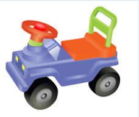
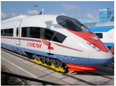
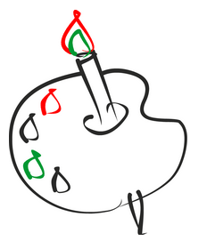

Транспортные средства
За рулем сижу ддовольный- Мне кажется тут лучше всего взять формат PNG, так как поддерживает прозрачность. Но если хватит 256 цветов, то можно использовать и GIF. |
На второй картинке можно использовать как PNG так и JPEG, но размер
будет меньше у JPEG
Поезда
Мне купили паравозик, |
КраскиТут однозначно используем изображение в формате GIF, так как 256 цветов однозначно хватает и есть прозрачность 
Нарисую я в альбоме |
Файл сохранен в формате PNG, так как удобен для работы из-за высокого качества, так же возможен есть прозрачный фон (по заданию не указано).